开心果 Need Car · 2022-08-02T12:34:00+08:00 · 微信原文
CanID为什么要参与总线仲裁呢？什么样的报文需要参与总线仲裁呢？
先不着急回答，我们先看如下一个CAN网络拓扑，此拓扑中，存在三个ECU：ECU1、ECU2、ECU3。其中ECU1包含两路CAN（CAN1、CAN2），ECU2包含一路CAN1，ECU3包含一路CAN1，4个CAN节点均通过双绞线挂接在一条CAN BUS上，如下所示：
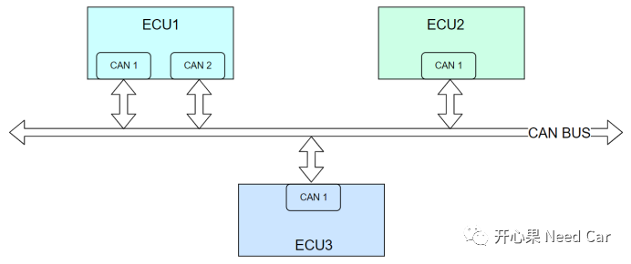
整车中，每个CAN节点都带有各种各样的报文，比如：应用报文、诊断报文、网络管理报文、标定报文等。根据每个节点功能，节点需要外发的应用报文从几个到几十个不等。如果在某一时刻，比如：下图中的t1时刻，4个节点都有报文需要外发，谁先发送呢？谁应该先获取CAN BUS的使用权限呢？
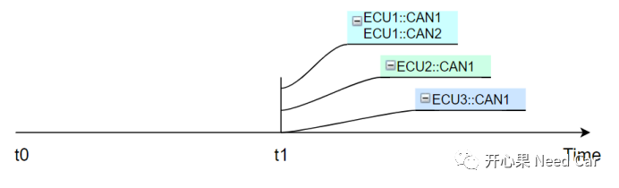
至此，本节开始的两个问题，我们应该有了答案：
总线的某一时刻，存在多个节点外发报文的可能，利用总线仲裁规则，可以合理分配各节点对总线的使用权；
CAN总线的仲裁针对各个节点的发送报文。
为了降低整车质量，一个CAN局域网内的所有CAN总线节点均挂接在一条双绞线上。每个节点都独自连接一条CAN总线，并行发送不行吗？文章开始我们就回答了这个问题，CAN总线的出现就是为了解决线束繁杂，整车质量不断增加的问题，且CAN总线是串行通信。
既然总线只有一条，局域网内所有CAN节点串行共用，那它们就得有先有后。依据什么样的规则获取CAN BUS使用权呢？
答：载波侦听多路访问（CSMA：Carrier Sense Multiple Access）。不要被名称吓倒，它就是一种介质访问控制的协议，即：利用“线与”规则进行仲裁。
结合上述示例，进一步解释一下“载波侦听多路访问”。
载波侦听：就是每个CAN节点“听”总线是否空闲，空闲了，就可以去尝试发送CAN报文。
说明：以高速CAN为例，“空闲”是指CANH - CANL的压差为0(±0.5V)，连续≥11 bit为隐性位（逻辑值1），如下所示：
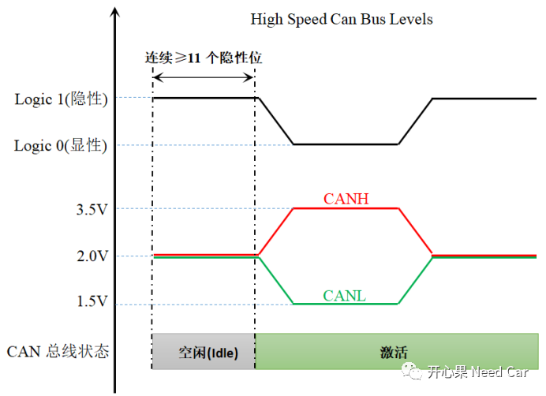
多路访问：在某一时刻（t1时刻），网络上有多个节点需要发送报文，这就是多路。
CanID参与总线仲裁过程利用了“线与”原理，那什么是“线与”？
我们开发中所使用的高级语言（比如：C语言）最终都需要转换成机器（单片机/PC）所能“认识”的二进制语言，即：“0”和“1”。机器就是使用它所会的这两个“词”完成了我们所要求的各种任务，比如：四则运算、逻辑运算等。
“线与”就利用了逻辑运算中的“与”(AND)运算规则。先回忆一下AND运算，即：0 AND 1 = 0，1 AND 1 = 1等。CanID仲裁过程如何利用“线与”?
先说一下CAN总线仲裁规则：由高位到低位，对CanID逐位（Bit）进行AND运算，当第一次出现比较结果与参与比较的任意一方Bit位不一致时，谁与比较结果一致，谁获胜。
示例1：uint16 0x0100与uint16 0x0101进行仲裁。
Step1:先将uint16转换成机器识别的二进制（Binary），如下所示：
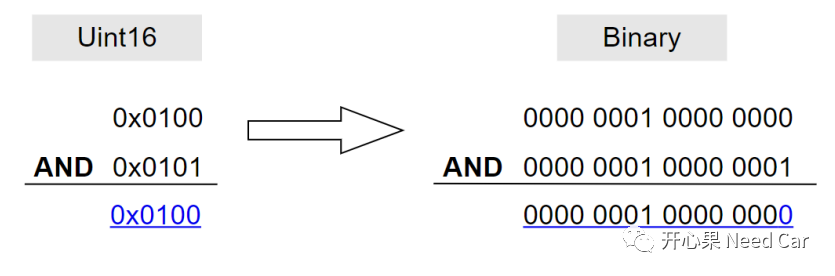
Step2:从高位Bit15逐位向低位比较
Step3:在Bit0位置，第一次出现比较结果与其中一方Bit值不一致
Step4:因为Bit0比较结果0与参与比较的0x0100 Bit0数值一致，0x0100获胜。
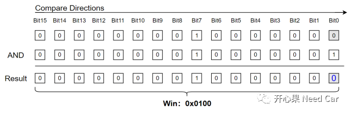
比较过程如下所示：
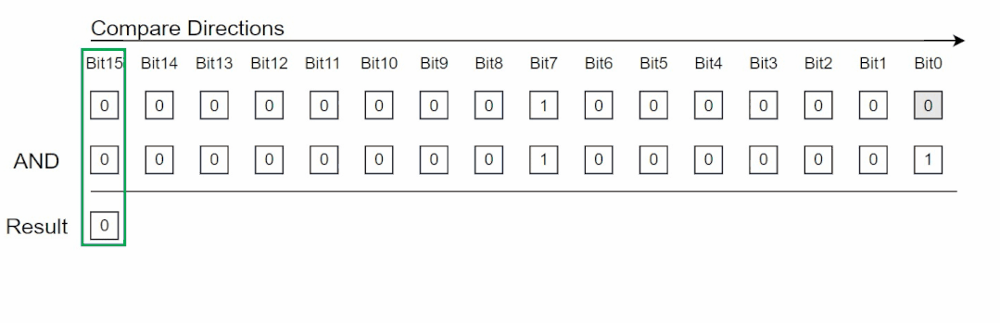
示例2：uint16 0x0102与uint16 0x0101进行仲裁
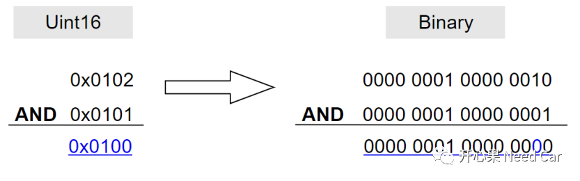
在Bit1位置，第一次出现比较结果与其中一方比较值不一致，而Bit1比较结果0与参与比较的0x0101 Bit1数值一致，0x0101获胜。既然0x0101已经提前获胜，Bit0就无需再参与比较，比较结果如下所示：
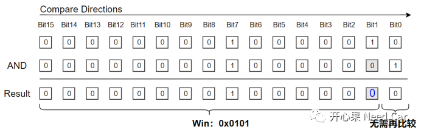
比较过程如下所示：
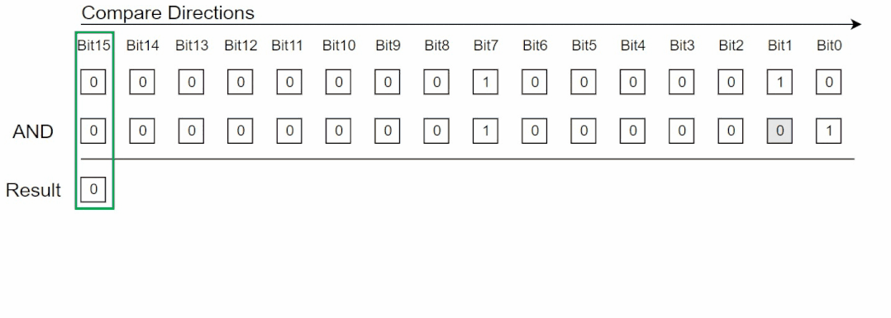
将如上的仲裁过程总结成一句话：CanID越小，优先级越高。
工程项目中，相比其他类型报文（诊断报文、标定报文、网络管理报文），往往应用报文的优先级高，为什么呢？由于应用报文所携带的功能信号（Signal），主要给算法使用，算法的处理时效关系到整车的功能，因而应用报文CanID一般都比较小（优先级高），以便于其优先获得总线的使用权。
了解了CanID如何利用“线与”进行仲裁还远远不够，我们还需要清楚CanID在CAN帧的位置以及CAN帧结构。
每一个CAN报文的CanID由唯一标识的11bit/29bit构成。以经典CAN帧为例，11bit CanID在Can帧中的位置如下所示：
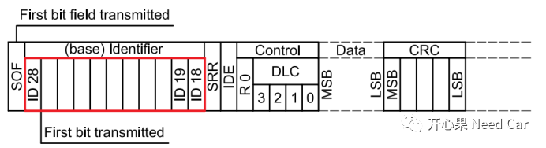
CanID的仲裁就是第一小节中提到的仲裁规则。
SOF（Start of Frame）由一个Bit组成，且常显性(“0”)，SOF是CAN报文的第一个Bit，标识着一帧报文的开始，CAN总线上的所有节点都可以在此时参与竞争，发送各自的报文。
SOF之后就是Identifier(仲裁域)，即各个节点要外发的CanID，通过CanID的仲裁，优先级高的报文被优先发送。同时，对应节点优先获得CAN总线的使用权，该节点可以继续发送后续的数据，而仲裁失败的节点则停止数据的发送，转而进行数据的接收，只能等待下一个SOF时刻再去仲裁。
假设：t0时刻，ECU1::CAN1要发送CanID为0x367的报文，ECU2::CAN1要发送CanID为0x301的报文，ECU3::CAN1要发送CanID为0x405的报文。分析一下0x301报文如何赢得总线使用权。
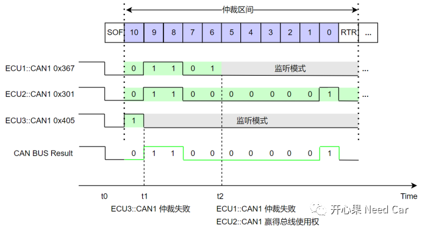
Step1:t0时刻，SOF之后，三个节点各自开始发送对应报文的CanID；
Step2：t1时刻，由于ECU3::CAN1对应的bit10值为1（隐性位），被ECU1::CAN1和ECU2::CAN1的显性位（数值为0）覆盖，ECU3::CAN1仲裁失败，失去总线使用权，进而进入监听模式，即：只能接收数据；
Step3:t2时刻，由于ECU1::CAN1对应的bit值为1（隐性位），被ECU2::CAN1的显性位（数值为0）覆盖，ECU1::CAN1仲裁失败，失去总线使用权，进入监听模式。至此，ECU2::CAN1独占总线使用权，继续发送后续数据。
往期精彩回顾